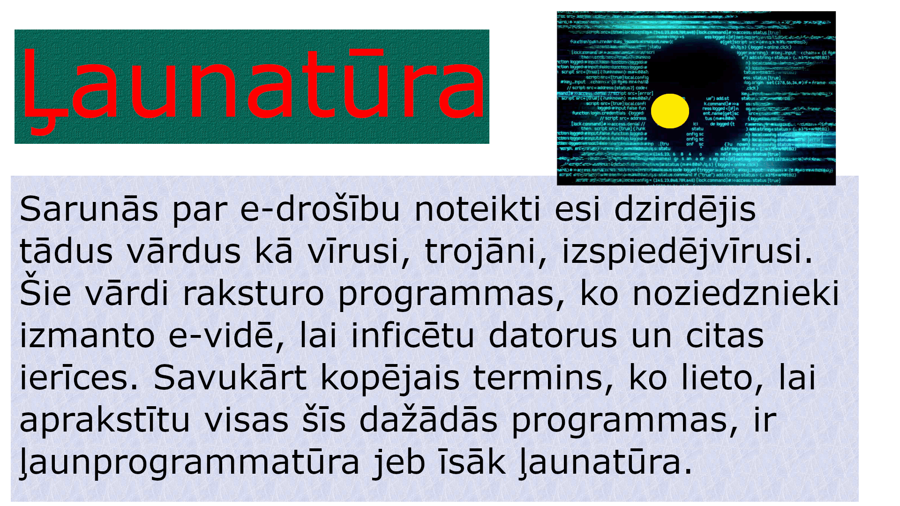

Mans Datorikas Portfolio
Ko es mācījos 2024./2025. mācību gadā
Šajā portfolio pastāstīšu un parādīšu, ko mācījos 2024./2025. mācību gadā datorikā pie skolotājas Aijas Lūses. Šī gada pirmā stunda notika sestajā septembrī un kopš tās mēs paspējām apgūt vairākas tēmas.
GIMP

EXCEL

WORD